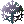
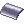
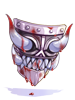

Cursed Knight's Shield
The  Cursed Knight's Shield is an enchantable shield that can be obtained from the Main Office through various means. This shield can be upgraded to a
Cursed Knight's Shield is an enchantable shield that can be obtained from the Main Office through various means. This shield can be upgraded to a  Purified Knight's Shield, which offers one more enchantment slot and better enchants but has more expensive enchanting ingredients. It can also turn into a Bloody Knight's Shield instead, which offers the same enchants as the original for cheaper costs, but will have to be cleaned first for quite a cost if you want to get a Purified Knight's Shield.
Purified Knight's Shield, which offers one more enchantment slot and better enchants but has more expensive enchanting ingredients. It can also turn into a Bloody Knight's Shield instead, which offers the same enchants as the original for cheaper costs, but will have to be cleaned first for quite a cost if you want to get a Purified Knight's Shield.
Knight's Shield Bearer
The Knight's Shield Bearer is an NPC located at the Basement of the the Main Office and offers various services related to the Knight's Shields:
- Selling enchanting ingredients
- Refund enchant items to their
 Endeavor Tokens and zeny cost, except for the Gold Angel Idol [Zeny] that are not refundable
Endeavor Tokens and zeny cost, except for the Gold Angel Idol [Zeny] that are not refundable - Save one enchant on the Purified Knight's Shield to reroll the other two
- Exchanging Knight's Shield for a Cursed Knight's Shield and vice versa
- Convert a bypass enchant to the opposite version of it (DEF to MDEF/MDEF to DEF)
- Cleaning a Bloody Knight's Shield
- Shield Purification (Convert a Cursed Knight's Shield/ Knight's Shield into a Purified Knight's Shield
Getting a Cursed Knight's Shield
There are currently 2 ways to obtain a Cursed Knight's Shield:
- Buying a Knight's Shield from the Nova Shop and exchanging it with the Knight's Shield Bearer NPC
- Exchanging Endeavor Tokens for a Cursed Knight's Shield with the Master of Coins found on the second floor of the main office
Knight's Shields obtained from the Nova Shop are tradeable and retain their cards and refines when exchanged through the Knight's Shield Bearer NPC. They also get a Knight's Mark (see explanation below). It loses its tradable property once it's been converted into a Cursed Knight's Shield.
Knight's Mark
 Knight's Mark is a special slotted enchant to mark that the shield was originally purchased from Nova Shop. The Knight's Shield Bearer will automatically apply this mark to a Knight's Shield obtained from Nova Shop after converting it into a Cursed Knight's Shield (ie, from tradable/non-enchantable to non-tradable/enchantable).
A shield with the Knight's Mark give no extra stats/advantage other than the fact that you won't lose 2 refine levels when converting to Purified Knight's Shield. All resulting shield with the mark other than the Knight's Shield will remain untradeable.
Enchantment
Cursed Knight's Shields can be enchanted by buying the necessary ingredient from the Knight's Shield Bearer. These ingredients are consumables that will open an enchantment window and give 2 random enchantments (3 for the Purified one) as shown in the table below.
Every enchantment also has a low chance of converting the shield into a Purified or a Bloody one (0.3% and 5%, respectively). A shield that hasn't been converted into any of these two can be re-enchanted over and over again provided that the necessary ingredients are available in the player's inventory.
If it has been converted into either a Purified or a Bloody one, one must use their respective enchantment ingredient to further enchant it.
For Cursed Knight's Shield [1] you need  Silver Angel Idol. You can get 2 for 100,000 zeny and 1x Endeavor Tokens.
Silver Angel Idol. You can get 2 for 100,000 zeny and 1x Endeavor Tokens.
| Enchant #1 | Min~Max | Enchant #2 | Min~Max |
|---|---|---|---|
| Reduce Damage From [Race] | 2 ~ 7 % | Reduce Damage From [Race] | 2 ~ 7 % |
| Increase Damage Against [Race] | 1 ~ 5 % | Increase Damage Against [Race] | 1 ~ 5 % |
| Increase Magical Damage Against [Race] | 1 ~ 5 % | Increase Magical Damage Against [Race] | 1 ~ 5 % |
| Reduce Variable Cast Time | 1 ~ 5 % | Reduce Variable Cast Time | 1 ~ 5 % |
| Increase Max HP | 100 ~ 1000 | Increase Max HP | 100 ~ 1000 |
| Increase Max SP | 20 ~ 200 | Increase Max SP | 20 ~ 200 |
| DEF | 30 ~ 100 | DEF | 30 ~ 100 |
| MDEF | 3 ~ 10 | MDEF | 3 ~ 10 |
| Increase Heal Effectiveness | 5 ~ 10 % | Increase Heal Effectiveness | 5 ~ 10 % |
| Increase ASPD | 1 ~ 5 % |
For Bloody Knight's Shield [1] you need Cursed Blood. You can get 2 for 100,000 zeny and 1x Endeavor Tokens
| Enchant #1 | Min~Max | Enchant #2 | Min~Max |
|---|---|---|---|
| Reduce Damage From [Race] | 2 ~ 7 % | Reduce Damage From [Race] | 2 ~ 7 % |
| Increase Damage Against [Race] | 1 ~ 5 % | Increase Damage Against [Race] | 1 ~ 5 % |
| Increase Magical Damage Against [Race] | 1 ~ 5 % | Increase Magical Damage Against [Race] | 1 ~ 5 % |
| Reduce Variable Cast Time | 1 ~ 5 % | Reduce Variable Cast Time | 1 ~ 5 % |
| Increase Max HP | 100 ~ 1000 | Increase Max HP | 100 ~ 1000 |
| Increase Max SP | 20 ~ 200 | Increase Max SP | 20 ~ 200 |
| DEF | 30 ~ 100 | DEF | 30 ~ 100 |
| MDEF | 3 ~ 10 | MDEF | 3 ~ 10 |
| Increase Heal Effectiveness | 5 ~ 10 % | Increase Heal Effectiveness | 5 ~ 10 % |
| Increase ASPD | 1 ~ 5 % |
For Purified Knight's Shield [1] you need Gold Angel Idol. You can get 1 Gold Angel Idol [ET] for 1,000,000 zeny and 2x Endeavor Tokens OR 1 Gold Angel Idol [Zeny] for 3,000,000 Zeny.
| Enchant #1 | Min~Max | Enchant #2 | Min~Max | Enchant #3 | Min~Max |
|---|---|---|---|---|---|
| Reduce Damage From [Race] | 2 ~ 7 % | Reduce Damage From [Race] | 2 ~ 7 % | Increase Damage Against [Race] | 5 ~ 10 % |
| Increase Damage Against [Race] | 1 ~ 5 % | Increase Damage Against [Race] | 1 ~ 5 % | Increase Magical Damage Against [Race] | 5 ~ 10 % |
| Increase Magical Damage Against [Race] | 1 ~ 5 % | Increase Magical Damage Against [Race] | 1 ~ 5 % | Bypass Defense of [Race] | 30 ~ 60 % |
| Reduce Variable Cast Time | 1 ~ 5 % | Reduce Variable Cast Time | 1 ~ 5 % | Bypass Magical Defense of [Race] | 30 ~ 60 % |
| Increase Max HP | 100 ~ 1000 | Increase Max HP | 100 ~ 1000 | Bypass Defense of Normal Monster | 30 ~ 60 % |
| Increase Max SP | 20 ~ 200 | Increase Max SP | 20 ~ 200 | Bypass Defense of Boss Monster | 30 ~ 60 % |
| DEF | 30 ~ 100 | DEF | 30 ~ 100 | Bypass Magical Defense of Normal Monster | 30 ~ 60 % |
| MDEF | 3 ~ 10 | MDEF | 3 ~ 10 | Bypass Magical Defense of Boss Monster | 30 ~ 60 % |
| Increase Heal Effectiveness | 5 ~ 10 % | Increase Heal Effectiveness | 5 ~ 10 % | No Weapon Size Penalty | |
| Increase ASPD | 1 ~ 5 % | Reduce After Cast Delay | 1 ~ 5 % | ||
| ASPD | 1 |
Race Enchants can be any of the following: Angel, Brute, Demi-Human (Except Players), Demon, Dragon, Fish, Formless, Insect, Plant, and Undead.
Advanced Enchantment
If you've a Purified Knight's Shield and got one good enchant but the others are crap, you can now save it and reroll the other two.
To achieve this simply select Advanced Purified Enchantment and pay one of the two available ways:
- High Cost: 1 Gold Angel Idol, 15,000,000 zeny
- Low Cost: 2 Gold Angel Idol, 1,000,000 zeny
Enchant Conversion
If you've a Purified Knight's Shield and you got an enchant that let you bypass DEF/MDEF and wanted the opposite version, you can now get it.
All you've to do is to talk to the NPC, select Enchant Conversion and pay one of the following options:
- 10 Endeavor Tokens
- 25,000,000 zeny
If you want a permanent option that lets you swap conversions whenever you want and free of charge, the same NPC has a second option that let's you add an Enchant Transmogrifier enchant for that.
The process costs one of the following:
- 150 Endeavor Tokens
- 375,000,000 zeny
Refund Enchant Items
In case you end with extra enchant items after getting the desirable enchants, you can now get back the investment made.
All enchant items except Gold Angel Idol [Zeny] are refundable.
For that select Enchant Item Refund and select the item you wish to see refunded as well as tell the npc the correct number of them afterwards.
Be aware that Silver Angel Idol and Cursed Blood are only refunded in even numbers.
Attention: Gold Angel Idol note that any Gold Angel Idol purchased with Endeavor Tokens prior to May2021 is not refundable
Cleaning
When a Cursed Knight's Shield [1] turns into a Bloody Knight's Shield [1], it loses the ability to turn into a Purified Knight's Shield [1]. It will have to be cleaned for it to be reverted back into a Cursed one and get the chance to be purified again. Cleaning a Bloody Knight's Shield retains all cards and refines [needs confirmation].
The Cleaning ingredients are as follows:
- 2 Silver Angel Idol
- 10  Armor Fragment of Valkyrie Ingrid
- 10 Armor Fragment of Valkyrie Reginleif
- 200 Energy Fragments
- 350
 Cursed Fragments
Cursed Fragments - 6,666,666 zeny
Attention: If your Bloody Knight's Shield [1]'s refine level is +4 or lower, then the cleaning is free.
Purification
Each Silver Angel Idol enchant has a 0.3% chance to turn a Cursed Knight's Shield [1] into a Purified Knight's Shield [1].
A pity system is in place to guarantee a transformation after 450 enchants without a transformation. The pity counter is reset when a transformation occurs.
When a Cursed Knight's shield becomes a Purified Knight's Shield, it loses 2 refines unless the shield has the Knight's Mark. All cards are retained in the process. The transformation is irreversible.
| Image | Name | Slot | Description | Obtaining Method | Remark |
|---|---|---|---|---|---|
|  | Knight's Shield [1] | Shield
Defense: 0 Weight: 80 Required Level: 1 Applicable Jobs: All |
|
|
|
| Cursed Knight's Shield [1] | Shield
Defense: 0 Weight: 80 Required Level: 1 Applicable Jobs: All |
|
NOTE: Due to the cleaning cost, refining a |
| |
| Bloody Knight's Shield [1] | Shield
Defense: 0 Weight: 80 Required Level: 1 Applicable Jobs: All |
|
|
| |
| Purified Knight's Shield [1] | Shield
Defense: 0 Weight: 80 Required Level: 1 Applicable Jobs: All |
|
NOTE: If your |
|